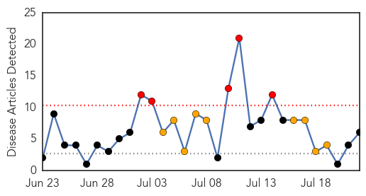
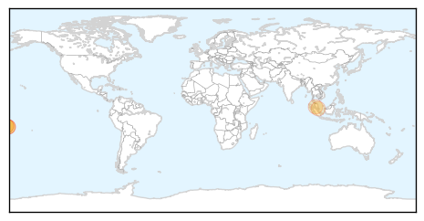

Dengue Fever
30-Day Web Trend
5 alerts, 9 warnings

30-Day Twitter Trend
0 alerts, 0 warnings

Article Locations
Article Confidences

Top Articles:
- 0.999
- One death from suspected mosquito borne illness
- 0.906
- American Samoa warns about illness outbreak
- 0.906
- American Samoa health officials warn about outbreak of illness that has affected 100 people
- 0.749
- Dengue awareness campaign launched
- 0.718
- 94 Dengue Fatalities So Far This Year
- 0.677
- 85-year-old Joo Chiat man is second patient to die of dengue, Health News & Top Stories
Top Tweets:
-
No tweets found for Jul 22, 2014
Measles
30-Day Web Trend
0 alerts, 0 warnings

30-Day Twitter Trend
0 alerts, 0 warnings

Article Locations

Article Confidences

Top Articles:
Top Tweets:
-
No tweets found for Jul 22, 2014